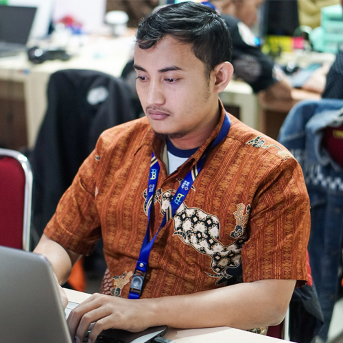

Aep Saprul Mujahid
Web & Mobile Developer
aepsaprul18@gmail.com
Portofolio
Tentang Saya
Saya Aep Saprul Mujahid, seorang programmer yang telah aktif di dunia pengembangan perangkat lunak sejak tahun 2014. Saya memiliki pengalaman luas dalam membangun aplikasi berbasis web dan mobile dengan fokus pada efisiensi, keamanan, serta pengalaman pengguna yang optimal.
Saya menguasai beberapa bahasa pemrograman utama seperti HTML, CSS, JavaScript, dan PHP, serta memiliki kemampuan dalam mengembangkan aplikasi menggunakan berbagai framework dan teknologi modern seperti:
- Laravel — backend development yang kuat dan terstruktur.
- Vue.js dan React.js — antarmuka web interaktif dan responsif.
- React Native dan CapacitorJS — pengembangan aplikasi mobile lintas platform.
- Node.js — server-side development dengan performa tinggi.
- MySQL — sistem manajemen basis data utama.
Saya terus berupaya untuk memperluas pengetahuan dan mengikuti perkembangan teknologi terbaru agar dapat menghadirkan solusi digital yang inovatif dan berdampak nyata.
Hubungi Saya